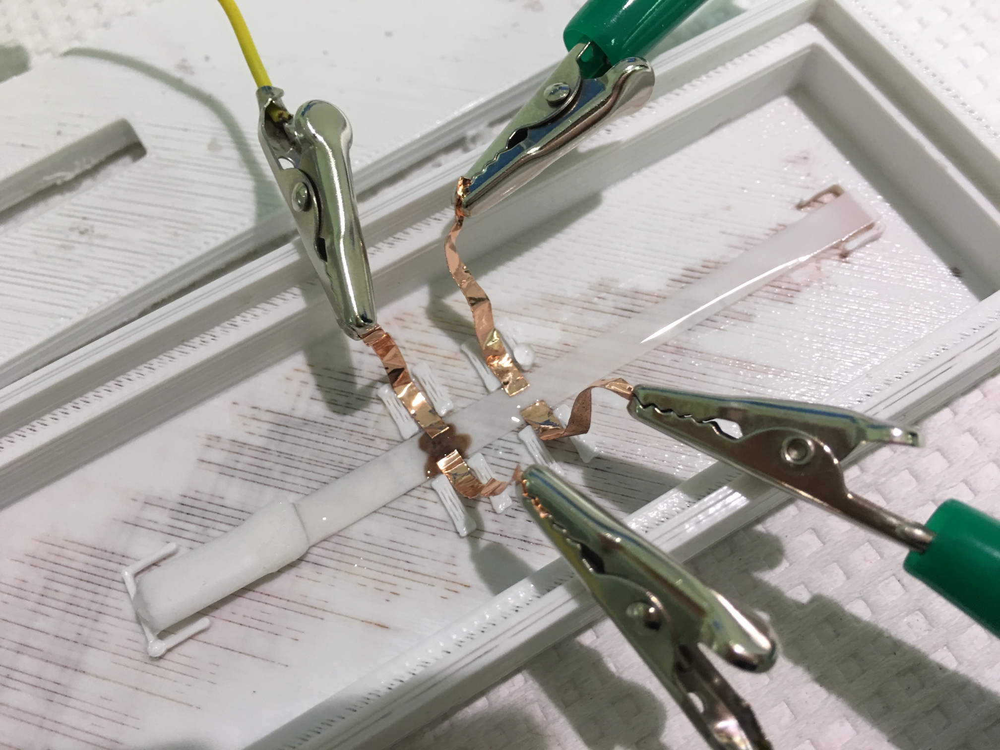

First Semester of Senior Design Wrapped Up!
12/17/2016
We have successfully presented and demonstrated our innovative approach to tackling TB diagnostics this semester. We were able to detect our nanoparticles successfully with out electrochemical approach. Next semester we will focus on implementing ESAT6, the TB biomarker, and begin extensive testing to determine threshold levels. Additionally, we will finalize our electrode design and we will miniaturize our current setup.